はじめ方
-
1タイトル画面
探偵名を入れて（なくてもOK）「捜査開始」を押します。前の続きがあるときは「続きから」も選べます。
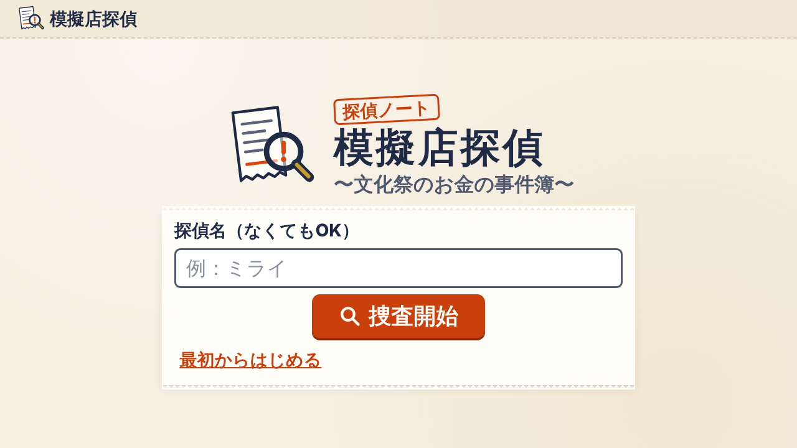
-
2セットを選ぶ
5つのセットから1つを選びます（はじめはセット1が選ばれています）。各行に、1日目と2日目の事件名と「学べること」、2日目のFPのテーマが並んでいます。「この事件で捜査開始」で始まります。
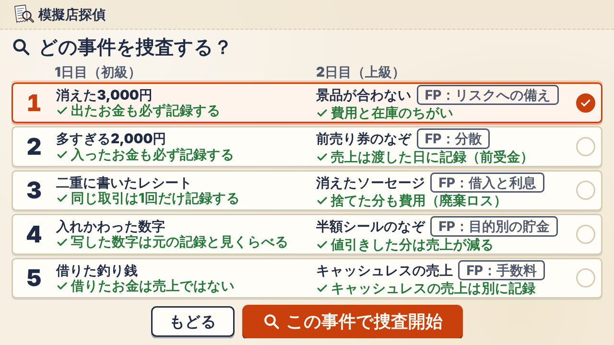
1回の流れ
1日目は 事件の始まり → 振り分け → ズレ発見 → 手がかり → 推理 → 正しい記録 → 事件解決。「2日目へ進む」を押すと探偵バッジが光って一段昇格し、2日目は同じ流れのあとにFPの選択と比較が加わります。
-
3事件の始まり
どんな店か、朝の時点でレジや材料がどうなっていたかを読みます。「帳簿を調べる」で次へ。
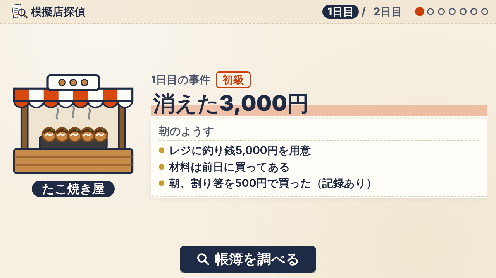
-
4帳簿を調べる（振り分け）
取引カードを「入ったお金」「出たお金」の箱に振り分けます。カードを箱へドラッグするか、カードをタップしてから箱をタップ。全部入れると、あるべき金額が自動で計算されます。朝の釣り銭（つりせん：おつり用に用意したお金）など最初からあるお金は、点線の枠で「最初からレジにある」と表示され、動かせません。
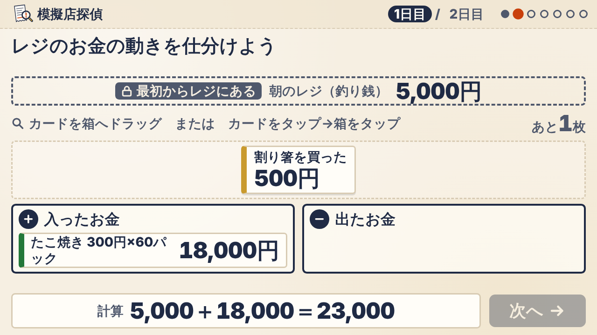
-
5ズレ発見
あるべき金額と、実際に数えた金額を並べて比べます。ズレは朱色で目立つように表示されます。
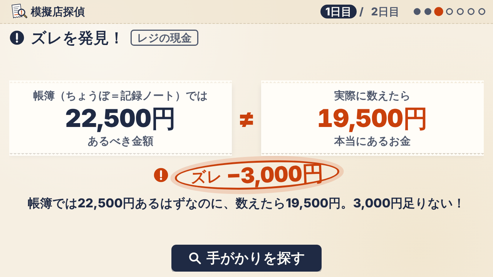
-
6手がかり
手がかりのカードを1枚ずつ開きます。弱い手がかりから強い手がかりの順。1枚目は無料、2枚目からはランク点が5点ずつ減ります。分かったと思ったら、いつでも推理へ進めます。
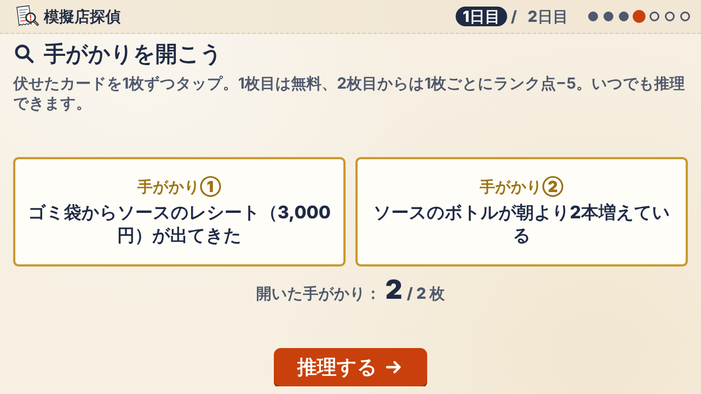
-
7真相の推理
3つの選択肢から真相を選びます。まちがえるとヒントが出て、もう一度選べます。真相はいつも「記録のミス」です。
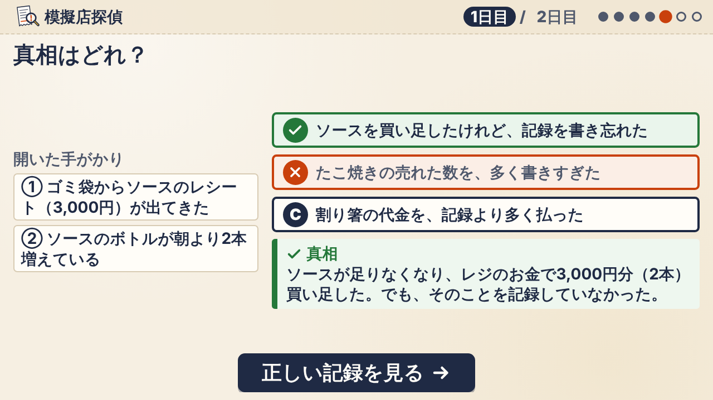
-
8正しい記録
「本当はこう書けばよかった」記録と、直した計算、その事件の学びを確かめます。簿記の言葉には、やさしい言い換えがついています。2日目の上級では、さらに費用（ひよう：今日の商売で使った分）などの振り分けと、利益（もうけ）の計算もあります。
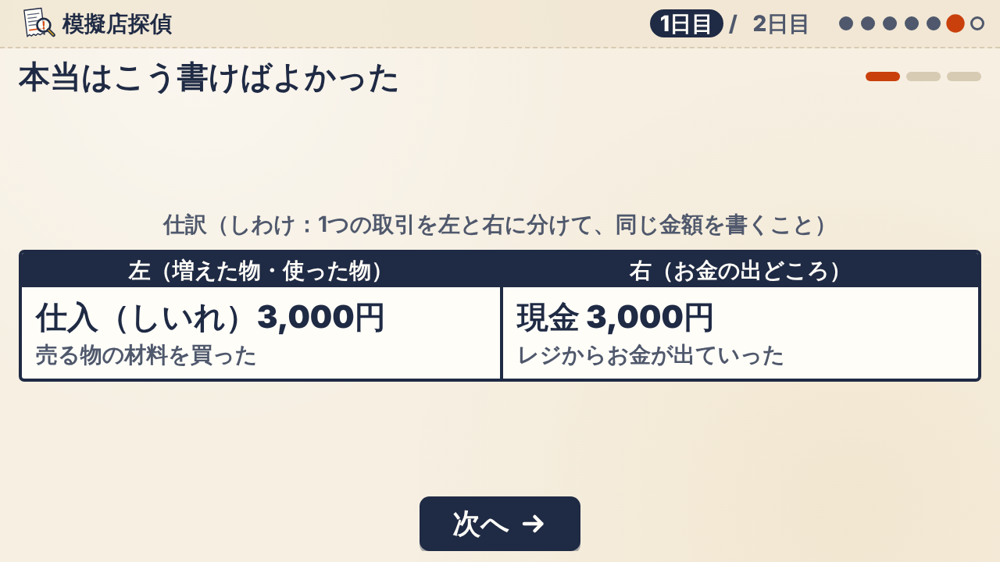
-
9FPの選択2日目
（2日目）もうけたお金をどう使う？ A・B・Cの3つから選びます。正解・不正解はありません。
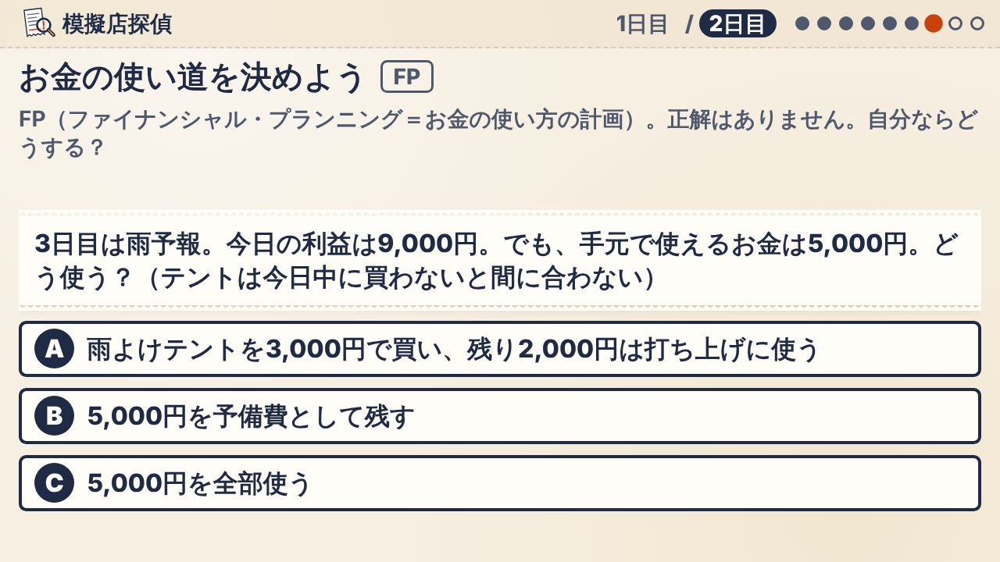
-
10結果の比較2日目
（2日目）A・B・C全部について、「晴れのとき／雨のとき」「お客さんが多いとき／少ないとき」など2つの場合の結果を表で比べます。自分が選んだ行には「あなた」と印がつきます。
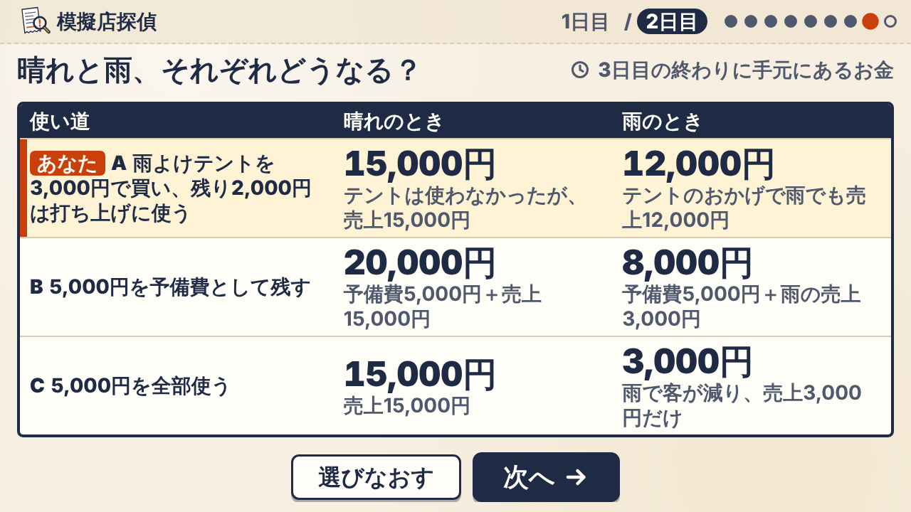
-
11解決
2つの事件の学びと最終ランクが表示されます。最後のメッセージは「お金は消えない。消えるのは記録」。
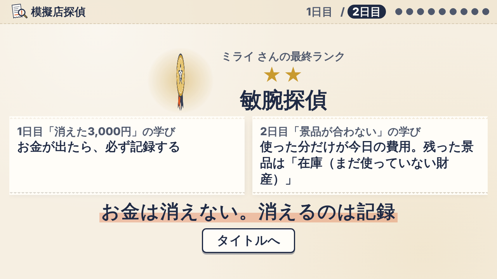
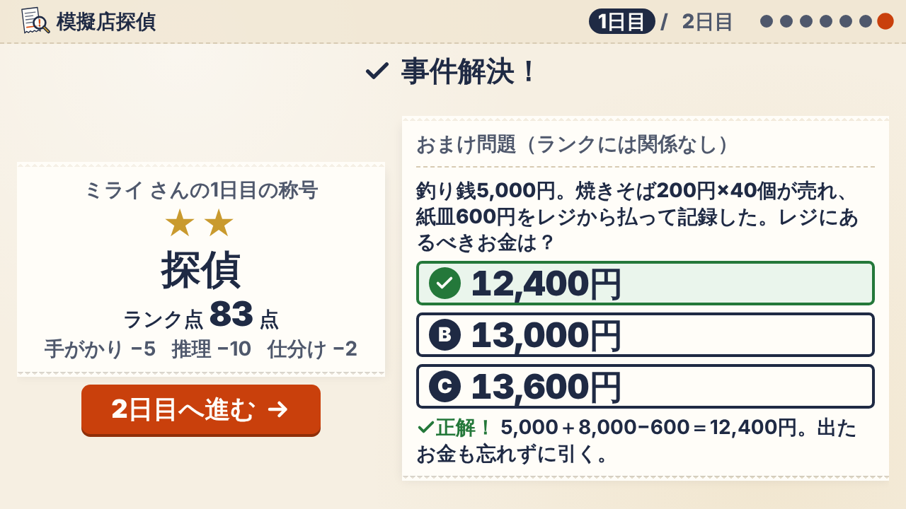
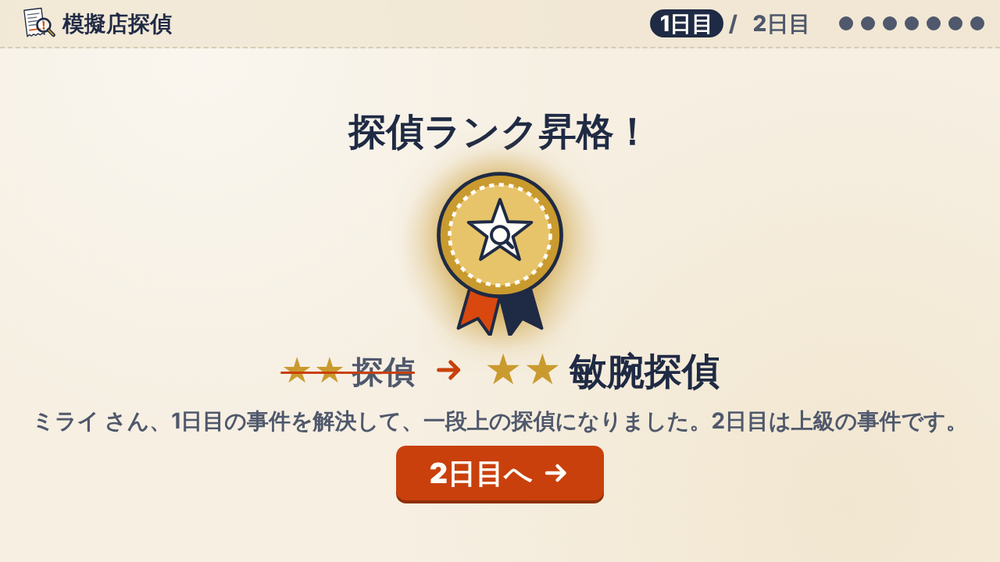
操作のコツ
ドラッグが苦手なら
カードを1回タップ（クリック）して選び、入れたい箱をタップ。これだけで振り分けられます。どの端末でも使える操作です。
手がかりは1枚ずつ
手がかりは弱い順に並んでいます。1枚目は無料。2枚目から減点があるので、少し考えてから開くのがおすすめです。
画面は横向きで
ゲームは1画面に収まるように作られています。横向きのパソコン・タブレットで、ブラウザの拡大率は100%のままがいちばん見やすくなります。
探偵ランクの仕組み
事件を解決すると、ランク点と称号が出ます。ランク点は100点から、次の減点を引いたものです（0点より下にはなりません）。
ランク点 ＝ 100 − 開いた手がかり（1枚目は無料、2枚目から1枚ごとに5点）
− 推理の不正解 1回につき10点 − 振り分けの間違い 1回につき2点
時間による減点はありません。ゆっくり考えても大丈夫。ランクに関係するのは、手がかり・推理・振り分けの3つだけです。
| ランク点 | 1日目の称号 | 2日目の称号 |
|---|---|---|
| 85点以上 | ★★★ 敏腕探偵 | ★★★ 名探偵 |
| 65〜84点 | ★★ 探偵 | ★★ 敏腕探偵 |
| 64点以下 | ★ 見習い探偵 | ★ 探偵 |
事件解決の画面に出る「おまけ問題」は、ランク点に影響しません。FPの選択にも正解はなく、ランクには関係しません。
続きから・最初からはじめる
続きから
進み具合は、遊んでいる端末のブラウザの中に自動で記録されます。ページを閉じても、次に開いたときタイトル画面の「続きから」で再開できます。
ブラウザの設定で保存が禁止されている場合も遊べますが、閉じると最初からになります。
最初からはじめる
タイトル画面の「最初からはじめる」を押すと「本当に消しますか？」と1回確認が出て、記録が消えます。共用の端末では、遊び終わったら押しておくと次の人が最初から遊べます。